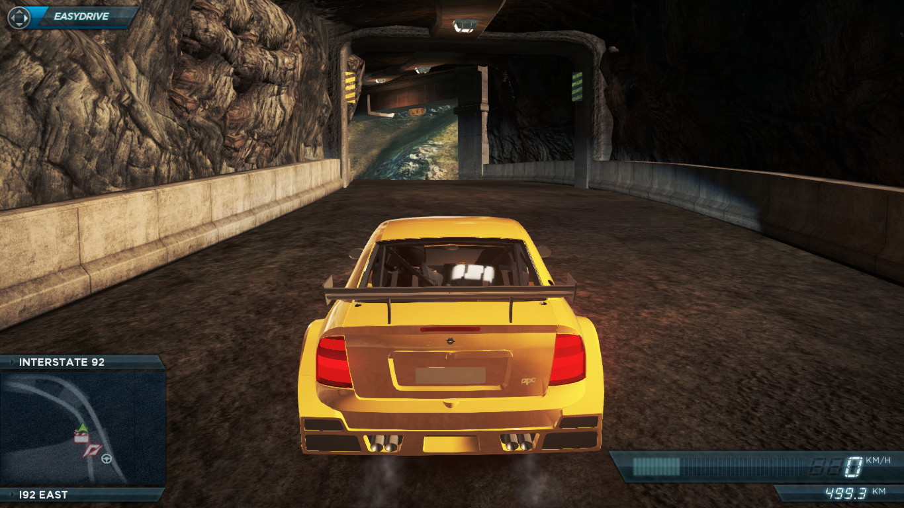
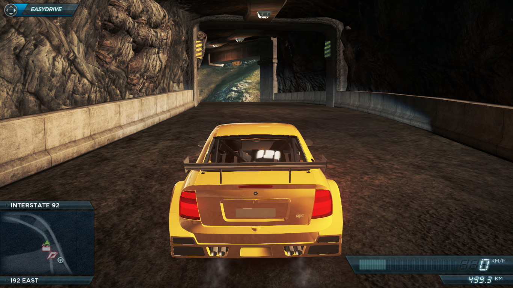
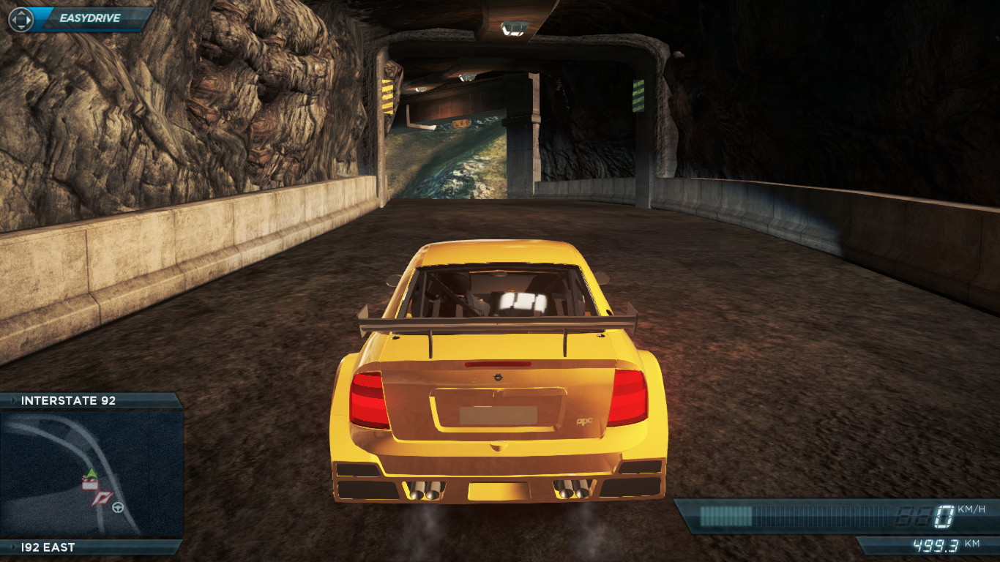

Most Wanted 2012 Opel Astra Extreme
 

Simply backup the VEH_122765_HI and VEH_122765_LO files and move the zip content to VEHICLES folder
Download

Simply backup the VEH_122765_HI and VEH_122765_LO files and move the zip content to VEHICLES folder